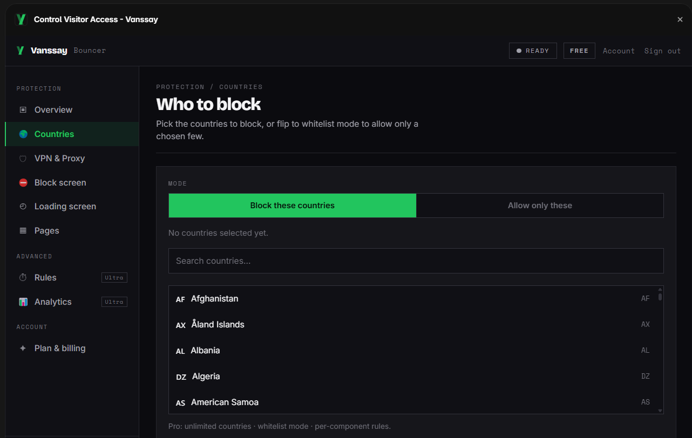

Framer guide
How to block countries on a Framer site
Framer has no setting for blocking visitors by country. If you need to keep visitors from certain countries out, for licensing, legal, compliance, or spam reasons, there are three ways to do it. This walks through all three and, honestly, when each one is the right choice.
Why Framer can't do it on its own
Framer handles design, CMS, and hosting, but it exposes no control over visitor access by location. There is no "restrict by country" option in site settings, and its hosting won't let you add server rules. So the block has to come from one of three places: a plugin that checks each visitor as the page loads, a CDN sitting in front of your domain, or a script you write and maintain yourself. Here's how each behaves.
Method 1: a geoblocking plugin
A plugin like Bouncer checks the visitor's country on the server as the page loads, then either lets the page render or replaces it with a block screen. Setup is done inside Framer, with no DNS changes. In the plugin you pick the countries to block (or switch to allowlist mode and name the only ones allowed), and choose what a blocked visitor sees.

Setup, step by step:
- Install Bouncer from the Framer marketplace (Insert panel → Plugins).
- Pick the countries to block, or switch to allowlist mode to name the only ones allowed in.
- Set what blocked visitors see, a message screen you can style, a redirect, or a blank page.
- Publish. The rule takes effect on the live site, and you can change it later without republishing.
Because the check runs on the server rather than in the visitor's browser, the blocked content is never sent to people who shouldn't see it, and the rule can't be read or skipped from the page source. Two things worth knowing up front: a plain country block is IP-based, so a visitor on a VPN can route around it unless you also turn on VPN and proxy detection (a paid feature); and the check runs against Vanssay's servers, which the team keeps online around the clock. In the rare event they can't be reached, the plugin is built to fail open, so your site still loads normally for everyone rather than locking anyone out.
Here is what a blocked visitor sees, styled to match the site rather than a raw error:
Access unavailable
Sorry, this content isn't available from your location.
Back to homeMethod 2: Cloudflare in front of your domain
If you route your domain's DNS through Cloudflare with its proxy enabled, a free WAF custom rule can block a country before the request ever reaches Framer. It works, and it has genuine strengths a plugin doesn't: the block happens at the network edge, and you get DDoS and firewall protection for the whole domain as a side effect.
The trade-offs on Framer specifically: you have to move your nameservers to Cloudflare (propagation can take a day), and the WAF only filters traffic while the proxy is on, which is the mode Framer's own custom-domain guidance tells you to disable, because proxying in front of Framer's SSL is a known source of certificate and redirect problems. A blocked visitor also gets Cloudflare's generic error page unless you pay for custom block pages, and rules apply to the whole domain, not a single page. Full walk-through: Cloudflare geoblocking on Framer.
Method 3: custom code
You can paste a script into Framer's custom code that calls a geolocation API and hides the page with JavaScript. It's the most fragile option: the page content still downloads to the browser (so anyone can read it in DevTools, or with JavaScript disabled), free geo APIs rate-limit and expose your key, and you maintain it yourself. Client-side hiding is cosmetic, it isn't real access control. It's only worth it if you specifically want a soft, non-secure nudge and are comfortable maintaining code.
Which one fits your case
Cloudflare's country block is free, so the real question is what that "free" costs you in practice. On a Framer site it means migrating your DNS and keeping the proxy on (the mode Framer tells you to turn off), a generic error page unless you pay Cloudflare for custom ones, and one blunt rule across the whole domain. Bouncer is also free to start, stays inside Framer, and its paid tier buys the things Cloudflare's free plan can't do at all. The honest comparison:
| Plugin (Bouncer) | Cloudflare | </>Custom code | |
|---|---|---|---|
| Setup time | ~2 minutes | ~1 hour + DNS wait | Hours, then upkeep |
| No DNS / nameserver changes | Yes | Move nameservers | Yes |
| Works with Framer's recommended setup | Yes | No (needs proxy on) | Yes |
| Set up & managed inside Framer | Yes | Separate dashboard | Hand-coded |
| Hides content server-side | Yes | Yes | No (client-side) |
| Block page matches your site | Yes | Paid only (generic error) | DIY |
| Custom loading + block screens | Yes | No | DIY |
| Per-page / per-section rules | Yes | Domain-wide only | DIY |
| VPN / proxy detection | Yes (Pro) | Not on free plan | No |
| Unlimited countries on the free plan | No (3, then Pro) | Yes | Yes |
| Also does edge DDoS / firewall | No | Yes | No |
| Price | Free · $6/mo Pro | Free* | Your time |
*Cloudflare's country rule is free; a branded block page, and blocking that survives Framer's recommended DNS setup, are not.
When Cloudflare is the better call
To be fair to the free option: reach for Cloudflare if you already run your DNS there with the proxy on, if you need edge-level DDoS or firewall protection anyway (blocking comes along for free with that), or if one blunt domain-wide block is genuinely all you need and a plain error page is fine. That's the one row where it clearly wins.
For most Framer sites, though, the plugin is what you actually want: it's set up in minutes without touching DNS, it doesn't fight Framer's own SSL setup, the block screen looks like your site, you can protect specific pages, and VPN traffic gets caught, none of which Cloudflare's free plan gives you.
Common questions
Does Framer have built-in country blocking?
No. There's no geoblocking setting in Framer. You add it with a plugin, a CDN rule, or custom code, the three methods above.
Can visitors get around it with a VPN?
A plain country block reads the visitor's IP, so a VPN can route around it. VPN and proxy detection (a paid feature in Bouncer, and a paid add-on in Cloudflare) catches the common cases.
Will blocking countries hurt my SEO?
Search engines crawl mostly from US IP addresses, so as long as you don't block the US your pages keep getting indexed. Google's guidance on locale-adaptive pages covers how its crawler behaves.
Can I block just one page?
With a plugin, yes, you choose the whole site or specific pages. A Cloudflare rule applies to the entire domain.
Sources: Cloudflare WAF custom rules · Google Search Central: locale-adaptive pages · Framer custom-domain help.